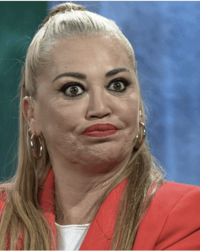
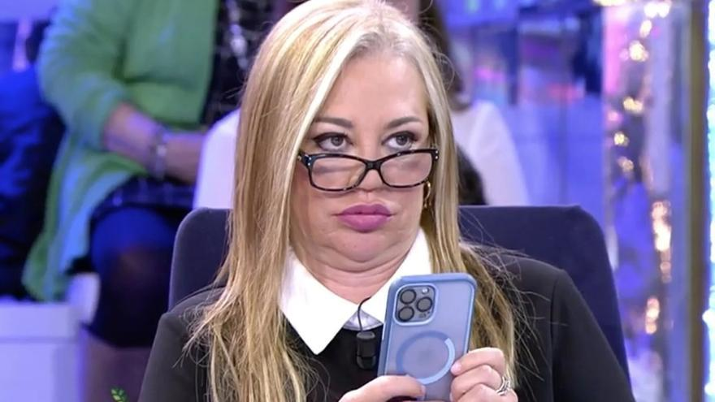

La princesa del pueblo

Soy colaboradora de televisión desde antes de que se usara la palabra contenidos. Llevo más de dos décadas demostrando que la naturalidad, la sinceridad y decir lo que piensas (aunque luego te arrepientas un poco) funcionan en televisión.
No interpreto personajes: soy yo. Y eso conecta. Estoy acostumbrada a debates intensos, silencios incómodos, aplausos, broncas, lloros, risas y volver al día siguiente como si nada. Profesional del directo y de la vida.
-
Contacto
📍 Madrid, España
📧 belen.esteban@email.com
📞 Disponible en horario de plató (y casi siempre fuera también)
-
Formación
🎓 Aprendizaje continuo en televisión en directo
🧠 Formación práctica en comunicación, debate y gestión de imagen pública
📺 Más de 20 años aprendiendo delante de cámaras
-
Experiencia
📺 Colaboradora de televisión en programas de máxima audiencia
🗣️ Participación en debates, entrevistas y especiales
⭐ Generación de contenido, momentos televisivos y conversación social
-
Acerca de mí
Soy una persona directa, trabajadora y muy real. Digo lo que pienso,
doy la cara cuando toca y sé adaptarme a cualquier situación.
Profesional del directo, de las emociones y de no rendirme.
Experiencia laboral

💼 Experiencia Profesional
📺 Colaboradora de Televisión
Funciones
- Opinar sin rodeos
- Defender mi punto de vista hasta el final (con educación, pero firme)
- Dar contenido incluso cuando el tema parece flojo
- Levantar un programa en horas bajas
- Manejarme en plató como en mi casa
- Saber cuándo hablar… y cuándo hablar más
Logros
- Mantenerme en televisión más de 20 años sin desaparecer
- Convertir frases espontáneas en titulares
- Generar conversación en redes, bares y peluquerías
- Ser reconocida incluso por quien dice “yo no veo la tele”